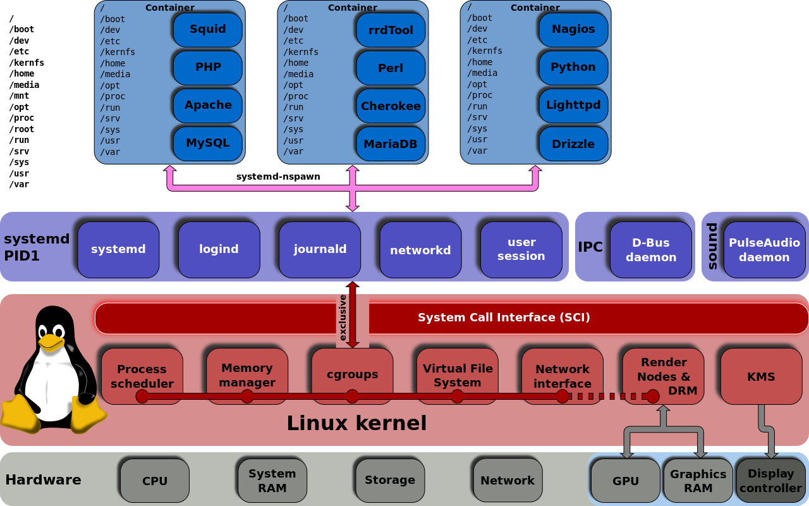
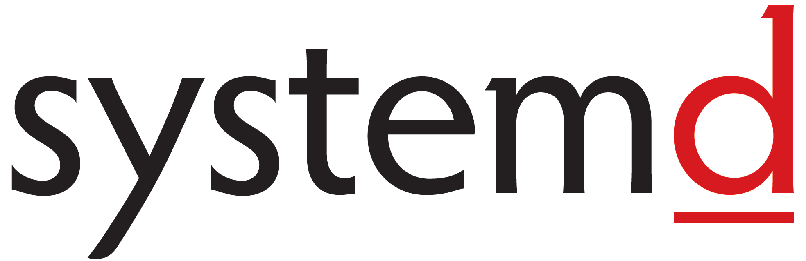

Hi everyone
In this post I am going to explain some essential systemd commands and concepts. As systemd popularity grew much more and changed the linux ecosystem drastically, every sysadmin, DevOps or every casual linux user should know the basics of this init system (It’s really a load of other things too!) and be able to use systemctl, journalctl, etc in order to leverage its power.
For example, by using systemd unit files you can completely get rid of using crontab as systemd replaces this functionality, you can also run the service as a temporary user or even activate a service when a connection is made to a specific port on server. as you can see, the possibilities are endless. Some of them will hopefully be described in further posts and links provided at the end of this post.

Concepts
Unit Files
Most systemd configuration take place in unit files. unit files are short configuration snippets that control behavior of systmed. Unit files are of different types which will be described below:
Service File
A service unit file is configuration file that shows how you like to run a specific process, like a web server application, a docker container, etc. It can be anything, even your own application.
Target File
A target unit file is mechanism used for grouping different services and starting them at the same time or in another desired fashion.
Timer units
Timer units are used to run services at specific times, like crontab.
Path units
Watches a path and responds based on defined actions.
Slice Units
Slice units are used for resource management of other units. Units are assigned to a slice which controls their use of resources. By default units are assigned to a default slice. which is “system.slice” for services and scope units, “user.slice” for user sessions and “machine.slice” for containers registered with systemd-machined.
Socket Units
Socket units are used to activate another service on request to a socket. It facilitates on-demand service activation. You can setup a server which listen for ssh connection and creates a container for each user which connects to the server and connects the user to the container. only using systemd! your power is limited by your imagination :D
Device Unit
systemd wrapper for udev devices.
Mount Units
Mount units are simply used to mount a filesystem automatically (or manually).
A sample service unit file (OpenSSH on debian jessie):
1
2
3
4
5
6
7
8
9
10
11
12
13
14
15
16
17
[Unit]
Description=OpenBSD Secure Shell server
After=network.target auditd.service
ConditionPathExists=!/etc/ssh/sshd_not_to_be_run
[Service]
EnvironmentFile=-/etc/default/ssh
ExecStartPre=/usr/sbin/sshd -t
ExecStart=/usr/sbin/sshd -D $SSHD_OPTS
ExecReload=/usr/sbin/sshd -t
ExecReload=/bin/kill -HUP $MAINPID
KillMode=process
Restart=on-failure
[Install]
WantedBy=multi-user.target
Alias=sshd.service
It is rather self-explanatory so after another example (a unit file for a docker container from CoreOS):
1
2
3
4
5
6
7
8
9
10
11
12
13
14
[Unit]
Description=MyApp
After=docker.service
Requires=docker.service
[Service]
TimeoutStartSec=0
ExecStartPre=-/usr/bin/docker kill busybox1
ExecStartPre=-/usr/bin/docker rm busybox1
ExecStartPre=/usr/bin/docker pull busybox
ExecStart=/usr/bin/docker run --name busybox1 busybox /bin/sh -c "trap 'exit 0' INT TERM; while true; do echo Hello World; sleep 1; done"
[Install]
WantedBy=multi-user.target
1
2
$ sudo systemctl enable /etc/systemd/system/hello.service
$ sudo systemctl start hello.service
systemd commands
systemctl
The most import command is probably systemctl. It is used for starting/stopping services. Here’s a good table from HighOnCoffee:
| systemctl stop service-name | systemd stop running service |
|---|---|
| systemctl start service-name | systemctl start service |
| systemctl restart service-name | systemd restart running service |
| systemctl reload service-name | reloads all config files for service |
| systemctl status service-name | systemctl show if service is running |
| systemctl enable service-name | systemctl start service at boot |
| systemctrl disable service-name | systemctl - disable service at boot |
| systemctl show service-name | show systemctl service info |
List service dependencies with this command:
1
# systemctl list-dependencies sshd.service
Change ad-hoc runlevel with systemctl isolate command. Boot targets are somehow equivalent to SysV init runlevels:
- Switch to another target (in this case multi-user/runlevel 3 in old SysV):
1
systemctl isolate multi-user.target
- Switch to graphical target (in this case graphical/runlevel 5 in old SysV):
1
systemctl isolate graphical.target
journalctl
View all log entries starting from this boot:
1
$ journalctl -b
view only kernel messages from this boot:
1
$ journalctl -k -b
using -x flag attaches some additional data to the logs, -n can get an integer and show this much lines (default 10):
1
$ journalctl -xn
view all logs from a specific service:
1
$ journalctl -b -e -u nginx.service
That’s All folks!
systemd has sooo many features (and of course so much criticism and debate!). I will try to cover more advanced features of systemd in following posts on this blog. Here are some links that will be useful for you:
https://access.redhat.com/articles/systemd-cheat-sheet
https://gist.github.com/mbodo/8f87c96ce11e91f80fbf6175412a2206
https://wiki.archlinux.org/index.php/Systemd
and this series of articles by Lennart Poettering (core systemd developer!):
- [systemd-for-admins-I] (http://0pointer.net/blog/projects/systemd-for-admins-1.html)
- [systemd-for-admins-II] (http://0pointer.net/blog/projects/systemd-for-admins-2.html)
- [systemd-for-admins-II] (http://0pointer.net/blog/projects/systemd-for-admins-3.html)
- [systemd-for-admins-IV] (http://0pointer.net/blog/projects/systemd-for-admins-4.html)
- [systemd-for-admins-V] (http://0pointer.net/blog/projects/three-levels-of-off.html)
- [systemd-for-admins-VI] (http://0pointer.net/blog/projects/changing-roots.html)
- [systemd-for-admins-VII] (http://0pointer.net/blog/projects/blame-game.html)
- [systemd-for-admins-VIII] (http://0pointer.net/blog/projects/the-new-configuration-files.html)
- [systemd-for-admins-IX] (http://0pointer.net/blog/projects/on-etc-sysinit.html)
- [systemd-for-admins-X] (http://0pointer.net/blog/projects/instances.html)
- [systemd-for-admins-XI] (http://0pointer.net/blog/projects/inetd.html)
- [systemd-for-admins-XII] (http://0pointer.net/blog/projects/security.html)
- [systemd-for-admins-XIII] (http://0pointer.net/blog/projects/systemctl-journal.html)
- [systemd-for-admins-XIV] (http://0pointer.net/blog/projects/self-documented-boot.html)
- [systemd-for-admins-XV] (http://0pointer.net/blog/projects/watchdog.html)
- [systemd-for-admins-XVI] (http://0pointer.net/blog/projects/serial-console.html)
- [systemd-for-admins-XVII] (http://0pointer.net/blog/projects/journalctl.html)
- [systemd-for-admins-XVIII] (http://0pointer.net/blog/projects/resources.html)
- [systemd-for-admins-XIX] (http://0pointer.net/blog/projects/detect-virt.html)
- [systemd-for-admins-XX] (http://0pointer.net/blog/projects/socket-activated-containers.html)
Comments powered by Disqus.